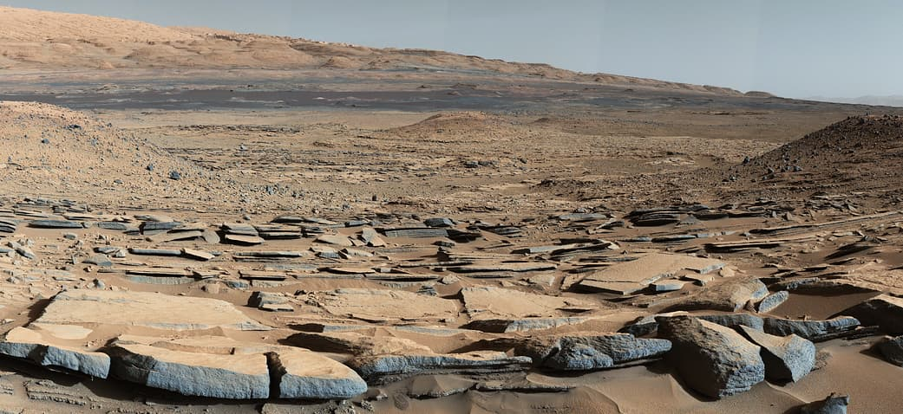

Марс
Открыть карту солнечной системыМарс — четвертая планета от Солнца — меньше Земли почти в два раза. Долгое время считалось, что на красной планете существует жизнь. Люди наблюдали на его поверхности объекты, казавшиеся им постройками, дорогами и даже гигантскими скульптурами. Однако на поверку марсианская цивилизация оказалась обманом зрения. Многочисленные исследовательские миссии пока тоже не подтвердили наличие какой-либо жизни на поверхности планеты.
Основные характеристики
Атмосфера Марса по составу напоминает венерианскую — 95% углекислого газа. Но поскольку она очень тонкая и разреженная, парникового эффекта не возникает, поэтому максимальная температура поверхности планеты — около 0°C, а атмосферное давление в 160 раз меньше, чем на Земле. В составе марсианской атмосферы есть водяной пар, а на полюсах лежат шапки ледников, но жидкой воды на поверхности нет.
И всё же учёные считают Марс самой перспективной планетой для освоения, поскольку погодные условия на ней довольно приемлемы для человека. Если не считать низкое содержание кислорода в атмосфере, радиацию и пылевые бури, длящиеся по несколько месяцев. На Марсе находится самая высокая гора в солнечной системе — вулкан Олимп, высота которого 27 километров. Это в три раза выше Эвереста, высочайшей горы Земли.
Из-за удалённости от Солнца год на Марсе почти в два раза длинней земного. Скорость вращения вокруг своей оси почти такая же, как на Земле, так что сутки длятся 24 часа 40 минут. Наклон оси Марса составляет 25,2°, а значит, на нём, как и на Земле, существуют сезоны.
Марс имеет два спутника — Фобос и Деймос, представляющие собой бесформенные каменные глыбы сравнительно небольших размеров. Из-за красного цвета древние римляне назвали планету именем бога войны.